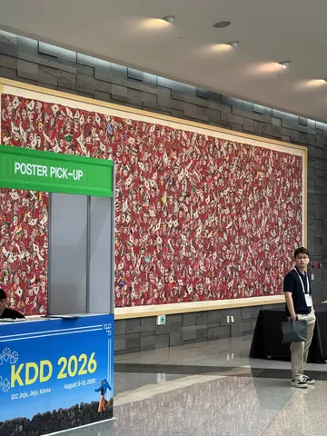
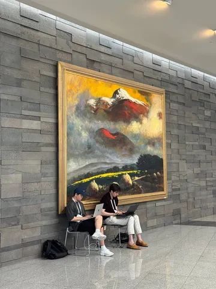
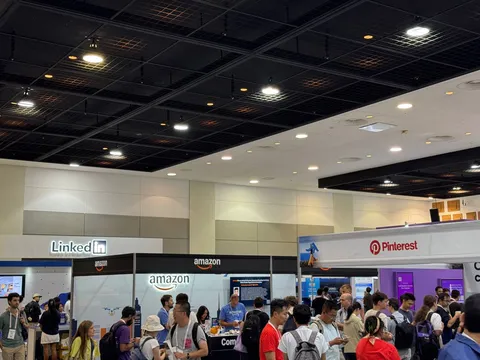
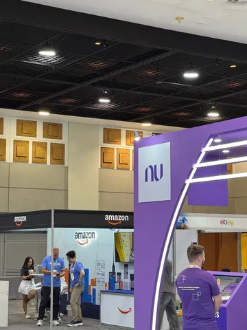
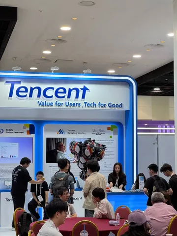

Продолжаем рассказывать о том, что было на KDD. В этот раз интересным поделится аналитик из группы внешних угроз и безопасности Владислав Альчиков. Ему слово.
Помимо классических треков о рекомендательных системах и AI, в этом году на KDD заметно больше говорили об антифроде и безопасности ML и LLM. Причём как о полноценном отдельном направлении — с воркшопами, research-сессиями и попытками задать архитектурные стандарты. Ниже — о трёх треках, которые удалось послушать, и о том, что показалось важным.
AI for Fraud and Abuse (AI-FA)
Первый в истории KDD воркшоп целиком о фроде. Организаторы — команда Safety из Google. Главный тезис воркшопа в том, что фрод перестал быть изолированной проблемой отдельных доменов — сегодня его всё чаще поддерживают автоматизированные агенты и кросс-платформенные генеративные ИИ-фреймворки.
Запомнились два доклада. Первый — о применении графовых foundation-моделей для транзакционного антифрода, где схемы мошенничества постоянно меняются. Второй — об LLM-аугментации обучающих датасетов без сбора новых реальных данных. Это даёт сразу два эффекта: проактивно закладывает в модель ещё не встречавшиеся сценарии фрода и частично снимает survivorship bias в разметке. Поскольку мы не видим тот фрод, который в своё время пропустили, и потому учимся на смещённой выборке.
Research-трек Adversarial Attacks, Privacy & Security
Это шесть 20-минутных докладов об атаках и защите. Здесь выделю BRP (Block Revert Patch) — query-efficient-атаку в decision-based black-box-сеттинге. Ключевая идея: оценивать успех атаки не только тем, удалось ли обмануть модель, но и тем, сколько запросов на это понадобилось. Это смещает фокус с «возможности атаки в принципе» на её практическую применимость.
Trustworthy LLM — воркшоп в парадигме blue sky
Здесь представили концепцию Trustworthy Agent Network (TAN). Основной посыл: безопасность мультиагентных систем нужно встраивать в архитектуру, а не «прикручивать» сверху постфактум-проверками и мониторингом. Авторы формулируют четыре базовых принципа, на основе которых планируют дальше выводить конкретные архитектуры и критерии проектирования для реальных мультиагентных систем.
Все три трека, при разной степени зрелости, бьют в одну точку: фрод и атаки на ML/LLM-системы становятся автоматизированными и агентными, а значит и защита должна становиться системной и встроенной. Будь то на уровне данных (LLM-аугментация), метрик атак (query-efficiency) или архитектуры целых мультиагентных сетей (TAN). Похоже, в следующем году эта тема на KDD станет ещё заметнее.
#YaKDD26
ML Underhood





